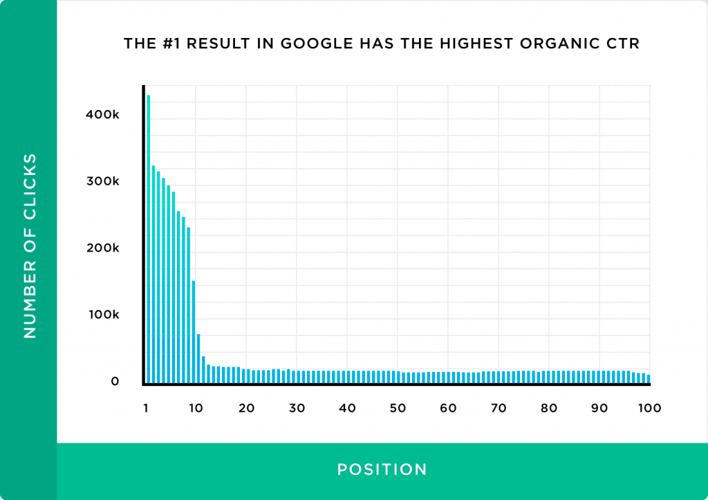

O que é SEO?
SEO é a abreviação para Search Engine Optimization, que em português significa "Otimização para Motores de Busca", e é uma das principais estratégias de marketing digital, já que utiliza um conjunto de técnicas e estratégias de otimização de sites, blogs e páginas na web, com o objetivo de melhorar seu posicionamento em buscadores.
Algumas pesquisas mostram que os três primeiros links orgânicos recebem cerca de 30% dos cliques em relação a pesquisa, e que menos de 1% dos usuários clicam em links da segunda página.
Fonte: Backlinko
Estratégia de SEO
É importante ter em mente que uma boa estratégia irá facilitar muito o seu trabalho de SEO, já que você irá pensar na construção do seu site de acordo com os objetivos desejados. É possível se fazer algumas perguntas como: "Qual objetivo do meu site?", "Qual meu público alvo?", entre outras. Uma ferramenta que pode ser muito útil é o Google Analytics, que é um serviço de Análise de Dados do Google, e que auxilia na avaliação de estratégias digitais. Ele pode ajudar a conhecer melhor o seu público alvo, identificar a páginas mais visitadas, monitorar o tráfego orgânico, entre outros dados.
Principais tags
Vamos apresentar algumas da principais e mais importantes tags para que os motores de busca entendam seu site e melhorem o posicionamento orgânico dele:
- Palavras Chave
- Meta Tags
- Canonical Tag
- Cabeçalhos
- Imagens
- Links Internos
Palavras Chave
Palavras chave são aquelas utilizadas pelos usuários na hora da busca pelo site, por isso é importante pesquisar antes para encontrar e fazer uso de palavras que sejam realmente utéis para seu site, de maneira que ele possa ser encontrado mais facilmente.
Meta Tags
As meta tags são algumas das tags mais importantes no nosso site, e são definidas pelas tags title, que é o título do nosso site, e a meta description, que a descrição dele, aquela que geralmente aparece para o usuário quando ele realiza a busca. Por isso ambas são de extrema importância.
Canonical Tag
É uma tag para garantir que o conteúdo inserido na página é original, não considerando a mesma página só que com parâmetros diferente como outra página, apenas se realmente estiver sendo utilizado algum serviço daquela página, dando origem assim a uma nova.
Cabeçalhos
Os cabeçalhos são utilizados como títulos e possuem alguns tipos diferentes, sendo representados pela letra "h" e delimitados de 1 a 5, de acordo com importância, sendo o número 1 o mais importante, e seguindo assim respectivamente. Lembrando que o h1, só deve ser utilizado uma única vez na página, e os outro devem ser tratados como subtítulos e podem aparecer diversas vezes, mas sem exagerar na quantidade de usos, principalmente do h2.
Imagens
As imagens são muito importantes para o site pois os motores de busca identificam sua página como um conteúdo de mais qualidade, que não possue apenas textos, ou seja, provavelmente seu site tem um conteúdo mais elaborado e pensado. É interessante usar o texto "alt" para descrever suas imagens para que os mecanismos de pesquisa possam compreender melhor o conteúdo de suas imagens.
Links Internos
Os motores de busca gostam de saber todas as páginas que estão no nosso site, por isso é necessário estabelecer uma conexão entre as páginas utilizando links, sem deixar pontas soltas. Isso ajuda sua página a ganhar relevância na hora da busca. É importante linkar páginas importantes à sua página home, pelo fato de ela ser a página com maior relevância ela irá ajudar a aumentar a força das outras.
Seja Original
Por fim é importante lembrar que para destacar seus sites é necessário apresentar um conteúdo orignal, já que os motores de busca podem identificar cópias e saberem qual dos conteúdos foi publicado primeiro.